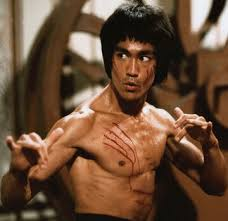
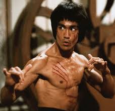
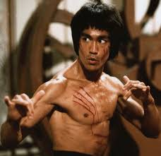

Gallery
 

Bruce Lee (born Lee Jun-fan) was a Hong Kong-American martial artist, actor, and filmmaker who is widely considered one of the most influential martial artists of all time. He was born on November 27, 1940, in San Francisco, California, and grew up in Hong Kong. Lee became known for his groundbreaking martial arts techniques and his portrayal of powerful, heroic characters in films such as "Enter the Dragon" and "The Way of the Dragon".
Bruce Lee's impact on martial arts and film is immeasurable. He broke barriers for Asian actors in Hollywood and introduced martial arts to a global audience. His philosophy of martial arts emphasized speed, power, and efficiency, and he developed his own system of combat known as Jeet Kune Do. Bruce Lee passed away on July 20, 1973, but his legacy continues to inspire millions around the world.
